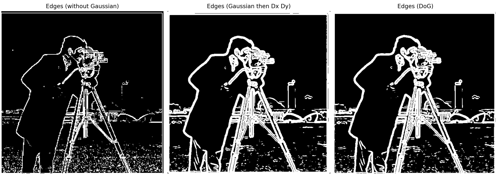
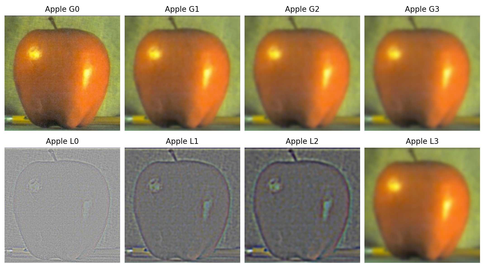

By Khoo An Xian
This project focuses on building intuitions about 2D convolutions and filtering. Convolution in image processing involves sliding a small filter (kernel) across the image, multiplying it with the local patch of pixels, and summing the results. This operation can blur, sharpen, detect edges etc depending on the kernel.Implementation
The most explicit way to implement convolution is to write four nested loops: two for the image pixels, and two for the kernel elements. Each output pixel is computed as the sum of elementwise products between the kernel and the corresponding image patch. However, this method is slow. We can make the convolution much faster by reducing to two for-loops. Instead of looping over kernel elements, we directly extract an image patch the same size as the kernel and let NumPy handle the elementwise multiplication and summation efficiently.| 4 loops | 2 loops |
Testing
Now, lets test it with a picture of me! Using the 2-loop implementation, I convolve my picture seperately with a 9x9 box filter and finite difference operators Dx and Dy. The box filter (9x9 array of 1s) blurs the image by replacing each pixel with the average pixel value in its 9x9 neighbourhood. Dx = [[1, 0, -1]] detects vertical edges by outputting pixel intensity differences between the left and right pixels, and Dy [[1], [0], [-1]] detects horizontal edges by outputting intensity differences between pixels above and below.Comparison with SciPy
We can compare our implementations against SciPy's convolve2d in terms of both runtime and accuracy. Accuracy is gauged by looking at the largest pixel difference between the outputs of our implementations vs convolve2d. We see that runtime differs significantly (with 4-loops being least efficient and convolve2d being most efficient) but output results are similar.| Implementation | Runtime | Max pixel diff from convolve2d |
|---|---|---|
| 4 loops | 54.3117s | 2.442e-15 |
| 2 loops | 7.6668s | 7.772e-16 |
| convolve2d | 0.2990s | 0 |
grad_mag = np.sqrt(gx**2 + gy**2)
where gy and gx are the outputs of convolution with Dx and Dy respectively. Then, gradient magnitudes are converted into binary values (1 for edge, 0 for no edge)
by setting a thereshold (edge = grad_mag >= threshold*np.max(grad_mag)). Below, we see the results of setting threshold = 0.1 and 0.2. Setting a lower threshold
leads to more noise as more grad_mag values are considered an "edge" and show up on the edge image. I selected threshold = 0.1 as it preserves the edges in the background buildings,
even though it does also lead to some noise in the foreground (grass patch area).
Now, lets try to reduce the noise in the result for threshold = 0.1 by first smoothening the original image before convolving it with the difference operators. We can do this by either (1) convolving with a 2d Gaussian filter then convolving with Dx and Dy, or (2) creating a derivative of gaussian (DoG) filter and convolving the original image with this filter. Both give the same result as convolution is commutative (A*B)*C = A*(B*C).
In the results below, threshold = 0.1 was used to get all binary edge images. We observe that compared to just the finite difference method in Part 1.2, smoothening the image with a Gaussian filter first leads to reduced noise and clearer edges. 
Now let's move on to play with frequencies! In this section, we "sharpen" an image by adding some high frequencies to it. First, we use a Gaussian filter to retain only the low frequencies, then we subtract these low frequencies from the
original image to obtain high frequencies. Finally, we add the high frequencies to the original image. Essentially, img + (img - img*G). This can be also collapsed into one step by convolving the image with
kernel = 2*I - G, where G is a Gaussian filter and I is an identity filter that keeps the image as it is.
np.clip(), the image is sharpened without
impacting contrast.


We can also tweak the amount of sharpening we do with a variable alpha that controls how much of the high frequencies are added back. Essentially, img = img + alpha*(img - img*G)
, and kernel = (1 + alpha) * I - alpha * G.
In this section, we create hybrid images! Below, you should see an owl, the Tower of Pisa, and Nutmeg the cat (high frequencies). However, if you squint, zoom out, or move far away from your screen, you will see a butterfly, a banana, and Derek (low frequencies).
These hybrid images are made by combining the low frequencies of image A with the high frequencies of image B. On image A (eg. butterfly), a low-pass filter is applied by convolving it with a Gaussian kernel which smooths away fine details. On image B (eg. owl), a high-pass filter is applied by subtracting the low-pass version of image B from the original image, leaving only edges and textures. The two components are then added together, producing a hybrid image that looks like one subject at close range and another when viewed from afar.Let's take a look at these images' Fourier transform spectrums! The Fourier transform represents an image in terms of spatial frequencies. Low frequencies (center of spectrum) correspond to smooth intensity changes and global structure, while high frequencies (edges of spectrum) correspond to fine details and sharp edges. The amplitude tells us how strong each frequency is.
As seen below, the low-pass image shows energy concentrated near the center, meaning most detail has been blurred out. The high-pass image shows energy in the outer regions, emphasizing edges and textures. The hybrid spectrum is a combination, containing both central and peripheral frequency energy.The cutoff-frequencies for each of the 3 examples were selected by trial and error, by tweaking the Gaussian's σ. For the low-pass image, a larger σ blurs the image more. For the high-pass image, a smaller σ makes the image very fine. The butterfly-owl example above has high-pass σ = 8 and low-pass σ = 12.
In this section, we implement Gaussian and Laplacian stacks to prepare for the next section on multi-resolution blending.
First, we define a Gaussian filter, where convolution is performed via convolve2d with a Gaussian kernel of size 6σ+1. The Gaussian stack is built by repeatedly applying the Gaussian filter at each level, resulting in a progressively smoother (lower-frequency) version of the original image at each level. The Laplacian stack is built by subtracting consecutive Gaussian levelsl_stack[i] = g_stack[i] - g_stack[i + 1]. Each Laplacian level thus corresponds to a frequency band, and the last level is simply the coarsest Gaussian.
In the below Orapple example, we constructed the Gaussian and Laplacian stacks for the orange and apple images over 4 levels with σ=2.

Finally, we perform pyramid blending, a technique for smoothly combining two images using Gaussian and Laplacian stacks. This is the Orapple we get after blending!
We first load and align two input images (im1 and im2), padding one if necessary. To control how the two images are blended, we define different masks - for example, a vertical split, a horizontal split, or an elliptical mask. Each mask indicates where one image should dominate and where the other should show through. We construct a Gaussian stack for the mask, which ensures a smooth blending transition.
Next, we build Laplacian stacks for the 2 images which captures different frequency bands of the images. At every level of our blending stack, we blend the two Laplacian images according to the blurred mask:
blending_stack = []
for l_im1, l_im2, mask in zip(im1_l_stack, im2_l_stack, mask_g_stack):
blend = (l_im1 * mask) + (l_im2 * (1-mask))
blending_stack.append(blend)